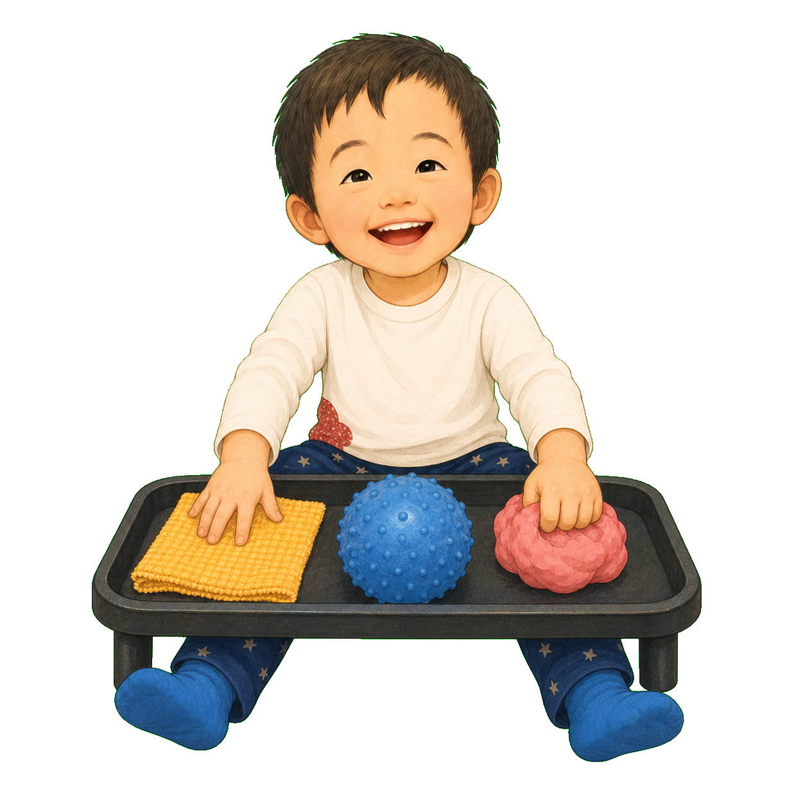
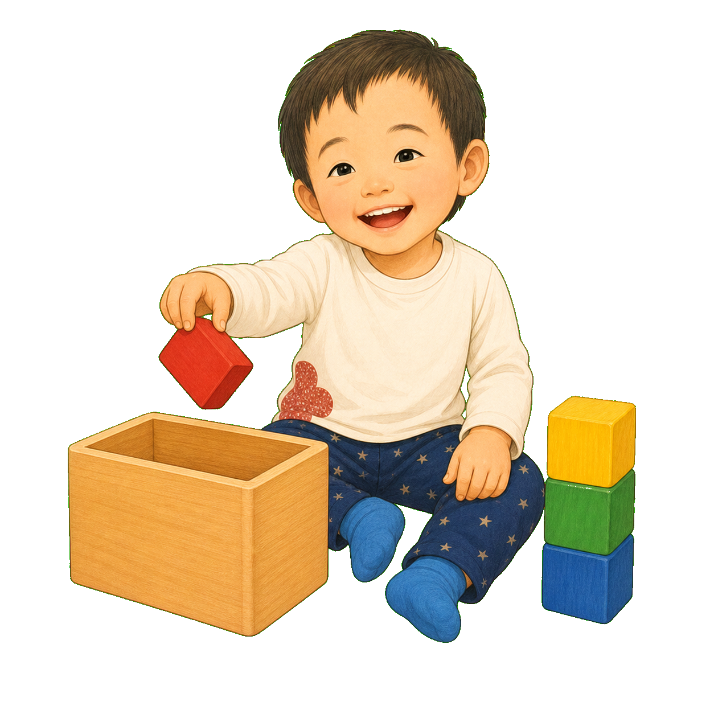
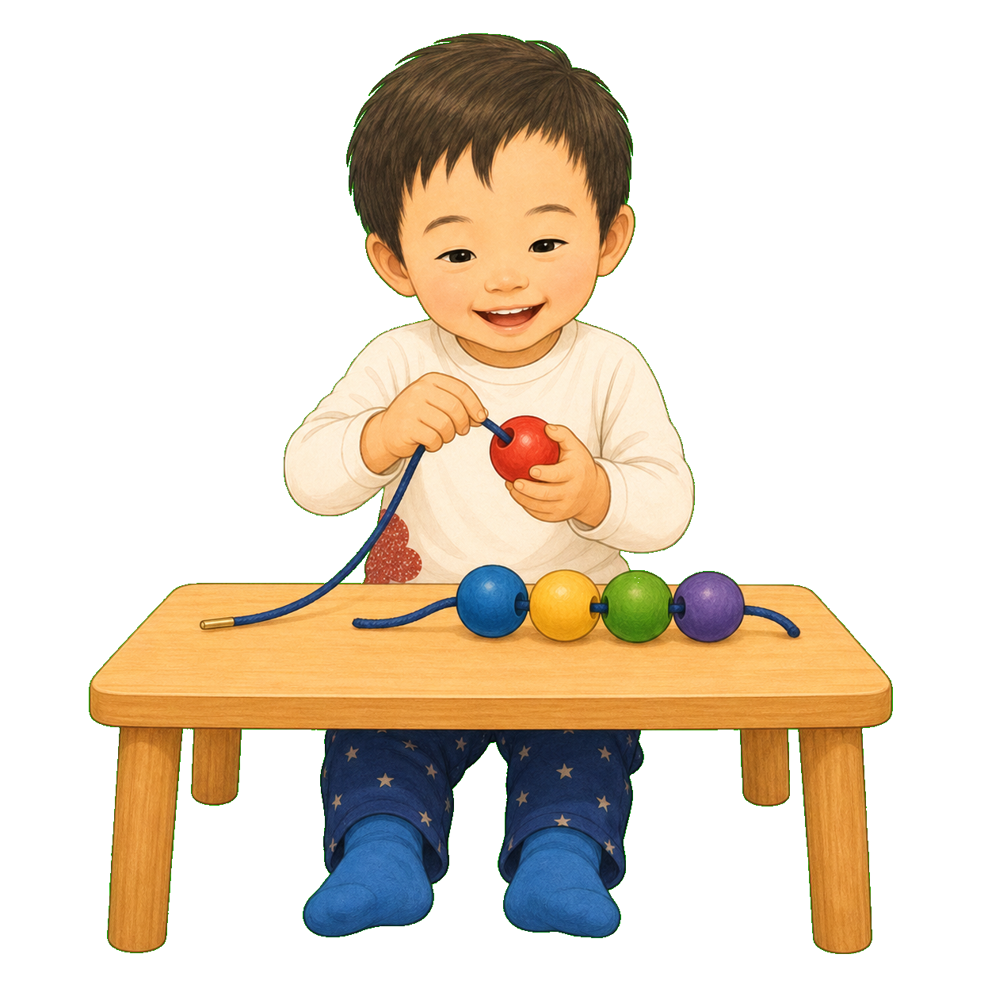
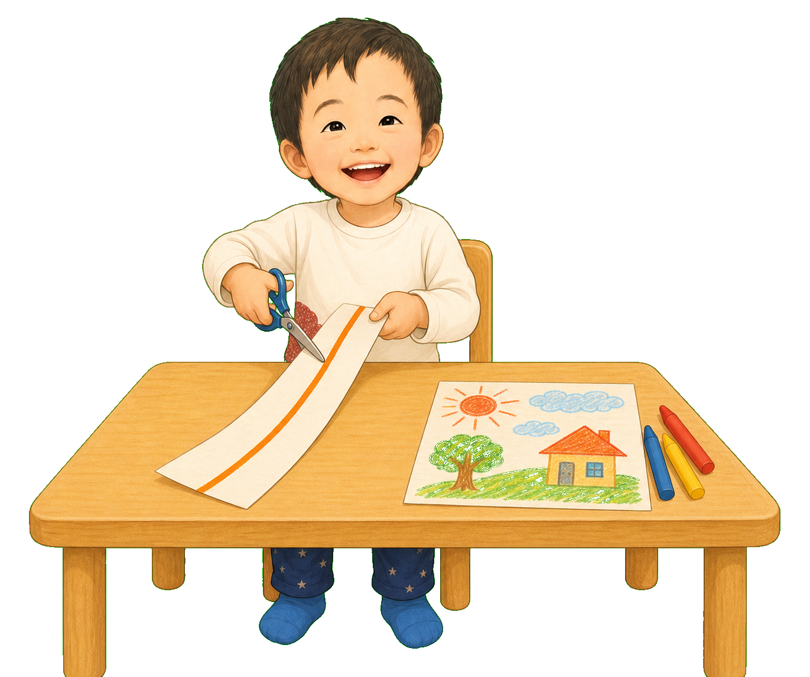

1
ぱかっ。
あそびが いっぱい！
「きょうは どんな おててに
であえるかな？」
2
おてての道 ①・感覚あそび
さわる。おす。にぎる。
ふわふわの布、でこぼこボール、やわらかい粘土。
手のひらと指が、いろんな感じに出会う。

3
おてての道 ②・入れる／出す
にぎって、はこんで、
はこの なかへ。ぱっ。
出して、また入れて。持つ場所と離す場所がつながる。

4
おてての道 ③・積む
上を 見て、
そーっと のせる。
位置を合わせ、指をゆるめる。ひとつ、ふたつ、みっつ！
5
おてての道 ④・両手チーム
片手が もつ。
もう片方が うごかす。
ふたを開ける、引っぱる、はがす。二つの手に別々の役目。

6
おてての道 ⑤・つまむ／ねらう
おやゆびと ゆびで、
ちいさく ぎゅっ。
つまんで、穴や印を見つけて、そこへ運ぶ。
7
おてての道 ⑥・紐通し
穴を 見つけて、
ひもを すーっ。
片手でビーズ、片手で紐。見る・合わせる・通す・引く。

8
おてての道 ⑦・ハサミ
紙を もって、
ちょきん。ちょきん。
片手で紙を動かし、もう片方で開いて閉じる。

9
おてての道 ⑧・描く
てん。せん。ぐるぐる。
腕を動かす線から、少しずつ指で動かす線へ。ぼくの絵が広がる。
10
たからばこから、
きょうの あそびを えらぶ。
大きさ、かたさ、持ち手、すべりにくさ。
今のおててが、たくさん動ける道具。
道具は、できるを ふやす なかま。
11
さわるから、にぎるへ。
にぎるから、はなすへ。
入れる。積む。両手。つまむ。通す。切る。描く。
昨日の遊びが、今日の力につながっている。
おてての道は、どんどん ひろがる。
たからばこに 入っていたのは、
おもちゃだけじゃなかった。
あそんで みつけた、たくさんの おてての力。
きょうの「できた」が、
あしたの あそびを ひらいていく。
おはなしの あとに
遊びの中で、手の力は重なりながら育ちます。
感覚遊び、入れる・出す、積む、両手操作、つまむ、紐通し、ハサミ、描画は、代表的なつながりです。実際の発達は重なり、順番が前後し、得意な活動も一人ひとり異なります。玩具は年齢だけでなく、本人の興味、現在の操作、安全性に合わせて選び、必要に応じてOT等へ相談してください。
りすせんせいに相談する